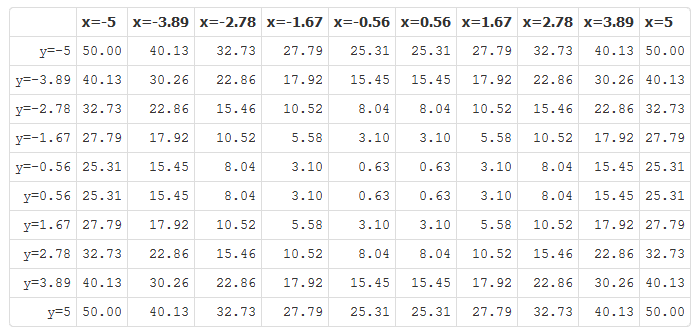
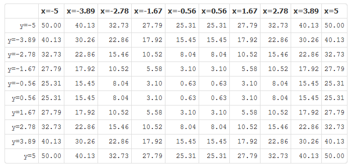

- Functions of both 1 and 2 variables can be easily visualized.
- Students spend quite a bit of time learning to graph or display in a table functions of 1 variable.
- Yet, because of time constaints, often much less time is devoted to visualizing functions of 2 variables.
- Visualizing functions of 2 variables can be easily accomplished via a computer or graphing calculator.
This web application--created using Shiny--helps students to visualize functions of 2 variables (meaning 2 independent variables corresponding to a single dependent variable) by displaying such functions as a surface plot, a contour plot, or a table of values.

 
